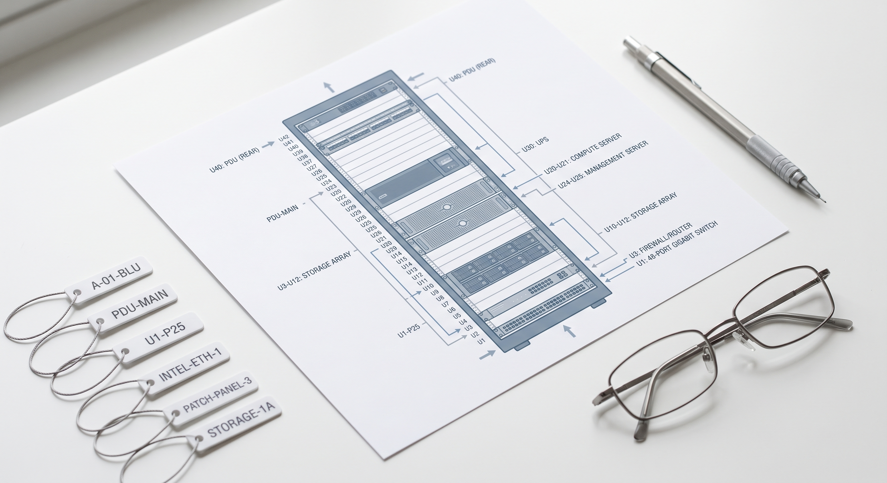

TRUST & SECURITY
Enterprise-grade by architecture.
Audit-ready by default.
Built to meet how enterprise security, compliance, and infrastructure teams evaluate a new platform: clear ownership over your data, deployment options that match how you already operate, and engineering backed by defensible, patent-pending work.
- Clear data ownership
- Flexible deployment
- Enterprise-ready controls
A RackTrack-verified rack row: the physical reality behind every posture line above.
01 / SECURITY POSTURE
Built to meet the signals procurement teams check first.
RackTrack is designed to support formal enterprise diligence, with controls, evidence handling, and operational boundaries kept clear and reviewable.
-
01
In progress
SOC 2 Type II
In progress, with controls and evidence practices being prepared for formal review.
-
02
Verified
Tenant Isolation
Every customer environment is isolated, with data residency for evidence and structured records kept under your control.
-
03
Active
Encryption
Rack video, derived records, and operational metadata are encrypted in transit and at rest.
-
04
Active
Credential Vaulting
Works with the credential vault you already run. RackTrack never stores production access keys directly.
-
05
Enabled
Access Control & Audit Logs
Role-based access and full audit logging support least-privilege operations and after-the-fact review.
02 / DATA HANDLING
Your data stays inside your tenant, on your terms.
Rack video is processed inside your tenant and turned into structured device and topology records. The structured output is what powers your workflows. The raw footage stays under your operational control throughout.
Rack Video
You capture it. You own it.
AI Processing
Runs inside your tenant.
Structured Output
Devices, connections, topology.
Your Control
Retain, delete, or reprocess.
- Tenant-resident processing
- Evidence retention on your terms
- Raw footage never leaves your control
Retain as EvidenceKeep what matters, for as long as you need it.
Delete AnytimeRemove raw footage the moment it's no longer needed.
Reprocess as We ImproveRe-run past footage as the platform gets sharper.
Raw footage never leaves your control.
Structured output gets reviewed like this, against the live rack, inside your own tenant.
03 / DEPLOYMENT OPTIONS
Flexible enough for standard environments and restricted ones.
Assess RackTrack against the operating model you already run, from managed cloud to fully isolated environments with stricter boundary requirements.
Multi-Tenant Cloud. Secure, scalable, and the fastest path to value: the right starting point for most teams.
Dedicated Cloud Tenancy. Deployed inside your own private environment, with full control over that tenancy.
Customer-Hosted Deployment. Runs inside your own data center, built for regulated environments.
Sovereign / Air-Gapped Deployment. For classified or restricted facilities with no external network access at all.
04 / DEFENSIBLE INNOVATION
Built on defensible innovation.
RackTrack's platform is backed by pending patent filings covering automated cable mapping and infrastructure intelligence workflows: the foundation of a multi-year technical moat.
-
i
Visual Rack Intelligence
Patent-pending methods for capturing rack imagery and identifying devices, ports, cables, and labels directly from the physical environment.
-
ii
Cable-to-Port Mapping & Validation
Patent-pending workflows that generate cable-to-port maps from visual data and validate them against live switch data: CDP, LLDP, ARP, and neighbor information.
-
iii
Infrastructure Reconciliation Methods
Patent-pending methods for merging scans across sessions and reconciling physical-to-logical infrastructure data into one verified state.
Reference: US Application 19/219,347, covering all three filings above.

These filings started from real rack documentation like this, not diagrams alone.
READY FOR FORMAL REVIEW